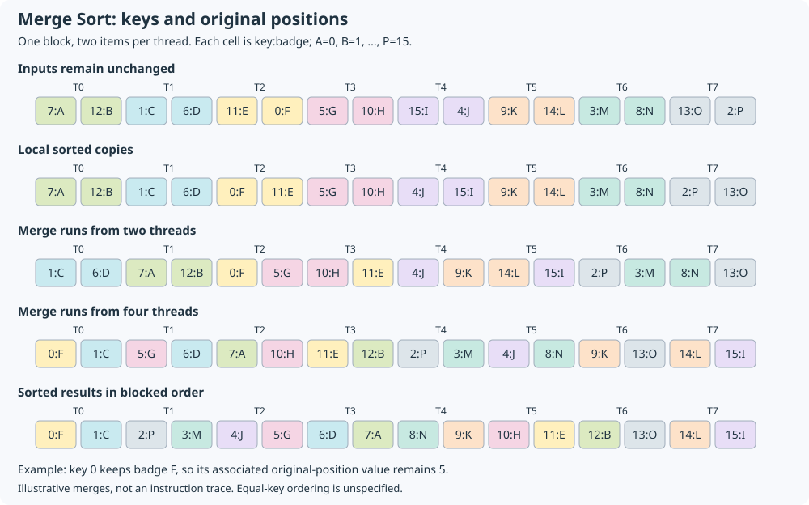

Merge Sort#
merge_sort_keys() sorts the keys held by a group.
merge_sort_pairs() carries an associated value with each key,
such as its original array position. Both return new payloads in
blocked order and leave the inputs unchanged.
Choose keys or pairs, the direction, and a group in the explorer. Each group sorts independently. The eight teaching lanes represent one block, two four-lane physical warps, or four two-lane logical warps. These are diagram widths: physical CUDA warps have 32 lanes. The executable example below uses a block of 64 threads.


Ascending pairs with two items per teaching thread. Badges A through P identify the associated original positions 0 through 15.#
Sort each thread’s copied items into a local run. Merge adjacent sorted runs within the group until one sorted sequence remains, then distribute it in blocked order. The inputs remain unchanged.
Thread T0 T1 T2 T3 T4 T5 T6 T7
Input keys 7,12 1,6 11,0 5,10 15,4 9,14 3,8 13,2
Input tags A,B C,D E,F G,H I,J K,L M,N O,P
Output keys 0,1 2,3 4,5 6,7 8,9 10,11 12,13 14,15
Output tags F,C P,M J,G D,A N,K H,E B,O L,I
Reading the stages#
The input row stays visible while separate copies move through local sorts
and merges. Colors record the original owning thread. In pairs mode, a
badge records the associated position value: A means 0, B means 1,
and so on. Select a pair to inspect its numeric value and current position.
The key and its value move together even when several keys compare equal.
The merge stages show one valid comparison-based construction, not the
instruction sequence of cub::BlockMergeSort or
cub::WarpMergeSort. This illustration takes the right run first
when keys compare equal. Merge Sort does not guarantee a stable order for
equal keys. Neither that tie choice nor the displayed stage count predicts
the backend’s implementation or performance.
Block calls require a power-of-two thread count. Physical warps and logical warps sort their own tiles; supported logical widths are 1, 2, 4, 8, 16, and 32 lanes. Every member participates. Sorting the tiles of several blocks does not sort the whole array; see Does sorting each block sort the whole array?.
Partial tiles#
valid_items counts items in each group’s blocked prefix, not threads.
It can end partway through a thread’s payload. All group members still call
the operation, including threads outside the prefix. Only the first
valid_items returned positions are defined; the explorer marks the
remaining positions with ?. Zero valid items produces no defined output.
Supply valid_items and oob_default together, with the same values
throughout the group. The sentinel must sort after all valid keys: an upper
bound for ascending order, or a lower bound for descending order. A typed
sentinel, whether a runtime value or a NumPy scalar constant, must have
exactly the key dtype. For ordinary Python literals, integer keys require
integers within the key dtype’s range. Floating keys accept integer or
floating literals within range, and allow infinite bounds. The explorer
chooses a suitable sentinel for its integer inputs. The displayed ?
does not promise a particular tail value.
Load only valid inputs and store only defined outputs. A sentinel does not make an out-of-bounds memory access valid. See the Programming Guide and cuda.coop.cutlass API Reference for partial-tile examples and parameter details.
Using Merge Sort in a kernel#
This example checks key order and pair association against a CPU reference. It includes partial tiles and verifies that input payloads remain unchanged.
@cute.kernel
def sort_tile(
source_keys: cute.Pointer,
source_values: cute.Pointer,
ascending: cute.Pointer,
descending: cute.Pointer,
sorted_values: cute.Pointer,
original_keys: cute.Pointer,
original_values: cute.Pointer,
items_per_thread: cutlass.Constexpr,
):
tile_size = 64 * items_per_thread
valid_items = tile_size - 7
group = coop.this_block()
keys = coop.load(
group,
source_keys,
items_per_thread=items_per_thread,
valid_items=valid_items,
oob_default=1000,
)
values = coop.load(
group,
source_values,
items_per_thread=items_per_thread,
valid_items=valid_items,
oob_default=0.0,
)
scratch = coop.TempStorage(alignment=16, auto_sync=True)
sorted_keys = coop.merge_sort_keys(
group,
keys,
valid_items=valid_items,
oob_default=1000,
temp_storage=scratch,
)
pair_keys, pair_values = coop.merge_sort_pairs(
group,
keys,
values,
descending=True,
valid_items=valid_items,
oob_default=-1000,
temp_storage=scratch,
)
coop.store(
group,
ascending,
sorted_keys,
valid_items=valid_items,
)
coop.store(
group,
descending,
pair_keys,
valid_items=valid_items,
)
coop.store(
group,
sorted_values,
pair_values,
valid_items=valid_items,
)
coop.store(
group,
original_keys,
keys,
valid_items=valid_items,
)
coop.store(
group,
original_values,
values,
valid_items=valid_items,
)
@cute.jit
def launch(
source_keys: cute.Pointer,
source_values: cute.Pointer,
ascending: cute.Pointer,
descending: cute.Pointer,
sorted_values: cute.Pointer,
original_keys: cute.Pointer,
original_values: cute.Pointer,
items_per_thread: cutlass.Constexpr,
):
sort_tile(
source_keys,
source_values,
ascending,
descending,
sorted_values,
original_keys,
original_values,
items_per_thread,
).launch(grid=1, block=_BLOCK)
Use descending=True to reverse order. CuTe register tensors and immutable
vectors are accepted alongside ThreadData and return fresh payloads.
Custom comparator callbacks are unsupported. Equal-key ordering is unspecified.